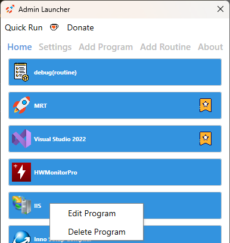

a WPF application that allows you to launch configured programs with administrator privileges. The application enables the creation of launch routines for executing multiple programs simultaneously and offers a quick run feature for rapidly launching a single program, such as a setup file.

This project is free and open source, if you like what you see just